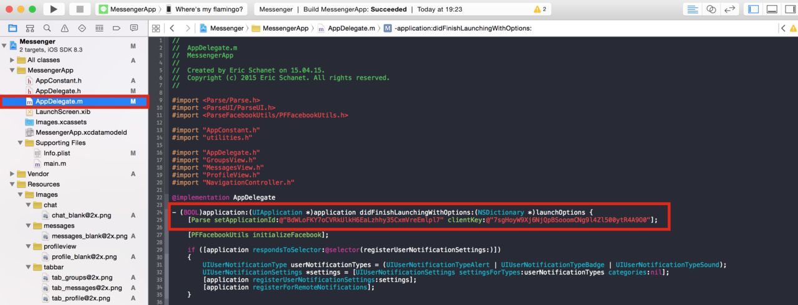
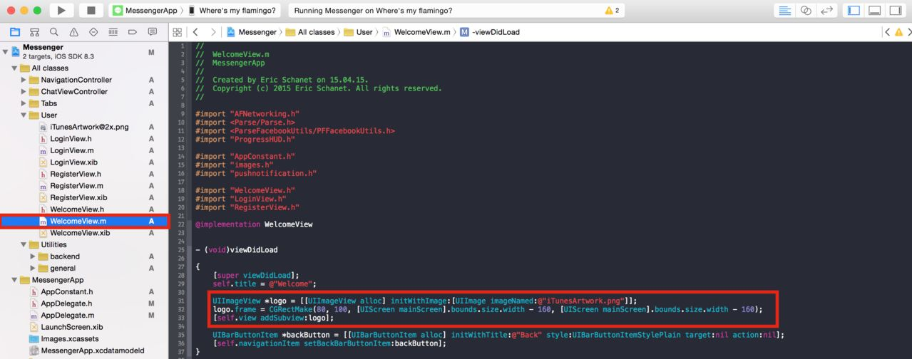

This documentation will show you in detail how to setup the Messenger template, and how to integrate it in to your existing project.
First of all, you have to open the project itself. Navigate to the <Messenger.xcodeproj> file in your downloaded folder, and open it. You will see, as always, the well-known window of XCode, presenting you the Project Navigator and a whole bunch of other items and options.
You can try to run the project on your device or simulator, it should work without any problems, even the push notifications should work (I set them up, that's why ...). If this is the case you could theoretically jump to the next section, but you need to change some keys of the App. In fact, the project uses Parse.com as backend service (saving all the users, chatrooms and messages), and Facebook as Login Service. This means, you need to change the corresponding keys to match the keys of the apps you will have created on these services.
We will start with the Facebook Login. (If you know how to do this and how to replace the key in the .plist, skip it).
Navigate to the <MessengerApp> folder, which is in the blue <Messenger.xcodeproj> folder. This will show you some files, including the <AppDelegate.m> and the <Info.plist> (in the Supporting Files folder). Ignore the <AppDelegate.m> file for a while and jump directly to the <Info.plist> file. It will show you a table of values, in which you find a 'FacebookAppID' row. This is the key of the Facebook I created myself for the Facebook Login. You will need to create your own App on Facebook:
• Go to developers.facebook.com and create a new app. Choose iOS as platform, and enter a name for your app. You will be asked, if this is a test app (you decide) and in which category your app belongs (again, you decide). You can now follow the quick start of facebook, or simply skip it (it doesn't tell you anything new ... phew).
• Eventually you will find yourself in the Dashboard of your App. There you will have to copy the App ID ...
and replace the key in the .plist file with your own key
• The last thing we need to do on Facebook is telling Facebook the Bundle ID of your app. The default Bundle ID is "eric.Messenger", but if you changed it with your own ID you created on Apple iOS Developers (you should know how to do this if you want the develop apps), you will have to enter your own Bundle ID for iOS.
Thats it for Facebook, you can leave Facebook and return to XCode. Try and run the App again, the Facebook login should still work, but this time it is your propper app that you're logging in. Congrats!
Now we move to the Parse.com part. (Again, if you're not new to Parse, skip this part, you should know everything)
First of all, navigate to the <AppDelegate.m> file. In the application:didFinishLaunchingWithOptions: method, you will find a Parse ApplicationID and Client Key. These keys are my own keys, they currently allow you to run the app, but they're not sufficient enough to go in production with the app (because they're mine...). What you will need to do, is register at Parse.com and create a new app. Parse has a great free plan, reserving you tons of space for free, and sparing you of the whole server-end programmation (Parse will do everything for you, literally, everything, you just send your data to Parse and their servers deal with it).
Now click on the app you just made and enter the date browser of it. You will be presented with the following screen, where you will have to go to settings and copy the "ApplicationID" and "ClientKey"
and replace the values in the AppDelegate.m file.

Launch the app once again. It should work without any problems. Congratulations, you're done with setting the app up. Note that you do not need to create any classes in the Parse Data Browser, the app does this for you - it creates the classes the moment it needs them the first time, but only if you allow Client Class Creation.
For general questions about Parse.com and Facebook, please read their documentations, esp. the documentation and Quickstart of Parse is excellent (and Google reveals tons of questions on the Parse forums, as always).
But unfortunately you're not done yet...
The last part - setting up push notifications
As I already mentioned, Parse has an excellent documentation and quickstart guide. This is esp. true for the push notifications, I couldn't have done it better. The template supports push notifications (of course, it is a chat app), and these are delivered by the Push Services of Parse (praise them!), all you have to do is set them up in your App Settings on Parse.
Here is the link to the QuickStart guide, please follow these instructions, and they'll get you to working pushes in no time. (https://parse.com/tutorials/ios-push-notifications)
If you're in a hurry, you can also skip the push part, and go through the rest of the documentation, your choice.
In this section, I will guide you through the basics of customising and reskinning your app.
We'll start with the icons. Simply create your own icon and replace all the icons in the <Images.xcassets> folder with your own icon (you absolutely need to respect the icon sizes!). In the folder you downloaded on CodeCanyon is even a .psd file of my icon, and once you have done your icon in an acceptable resolution, there are tons of services producing you every single icon resolution you need (here is one, if you're too lazy to search them on your own).
If you have created your new icon, you can also replace the icon in the welcome view (the view that is shown to you, when the app has launched):
• In the "All classes" folder go to the <User> folder and open the <WelcomeView.m> file, where you see the code responsible for the icon in the viewDidLoad: method. The respective image is in the same folder, named iTunesArtwork@2x.png, replace this one with your own icon, respecting the 1024x1024 pixels resolution and the "@2x" in the name. If you change the name of the image, you will also need to change the name in the code.

• In the same folder, are the <LoginView.xib>, <RegisterView.xib> and <WelcomeView.xib> files, which are responsible for the respective views. In these .xib files, you can change the design very easily to fit your personal needs.
Next you need to customise the LaunchScreen. Navigate to the <LaunchScreen.xib> file and edit the labels in the .xib to fit your needs. You can also create a one-color LaunchScreen, do whatever you want, you're free, as always.
Now we leave the login/register views and enter the app with a logged-in user. The first thing you see is that the NavigationBar is black - this can be changed in the <NavigationController.m>.
The last main thing you have to do, is go to the <Resources> folder, and reskin the images there. No need to explain anything more here, I think this should be straightforward. (For educational purposes, no red rectangles, nor circles here, exerce yourself and try to find them on your own, I promise it's not that difficult ... hue hue)
For reskin and customising actions in the proper chat views (where you see the messages), please go to the JSQMessages documentation on github (a big thanks to Jesse Squires).
If you have any questions, don't hesitate to contact me! I will be happy to help you (I am a physics student and have A LOT of freetime, really, A LOT!).
Integrating the template in your existing project is not trivial and strongly depends on how the architecture of your project looks. In general, if you have a tab-based application, you will need to copy all of the following files into your project.
Once you've done that, you can simply initiate the MessagesView Controller as normal ViewController:
@property (nonatomic, strong) MessagesView *chatViewController;
and add it to your UITabbarController:
self.chatViewController = [[MessagesView alloc] init]; UINavigationController *chatNavigationController = [[UINavigationController alloc] initWithRootViewController:self.chatViewController]; self.tabBarController.viewControllers = @[ homeNavigationController, accountNavigationController, emptyNavigationController, chatNavigationController, activityFeedNavigationController];
(Here the homeNavigationController, accountNavigationController, emptyNavigationController and activityNavigationController are sample NavigationControllers I used in an app.)
That's it, with this you should be able to integrate the template in your existing project. Note that your Parse Database needs to fit the data models of the template (the easiest thing to do, is to allow dynamic class creation on parse, so that the app can create classes on its own which means that you don't need to create every single class, the app does it for you)
Again: Questions? Contact me, I'll help you.
This project is based on the open sourced project NotificationChat available here: https://github.com/relatedcode/NotificationChat
using the JSQMessagesViewController: https://github.com/jessesquires/JSQMessagesViewController